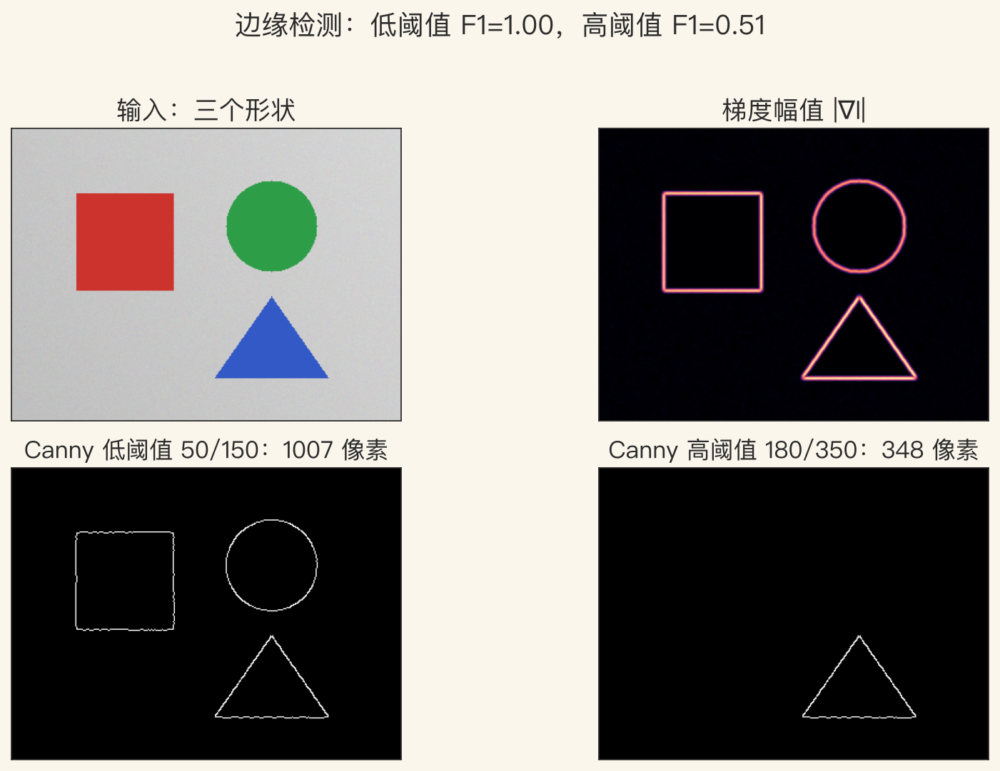
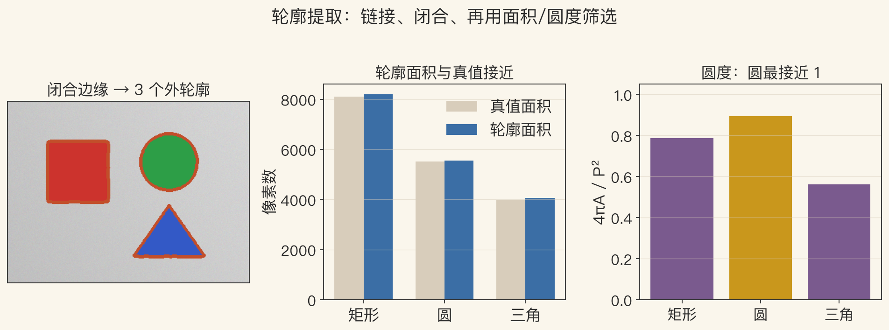
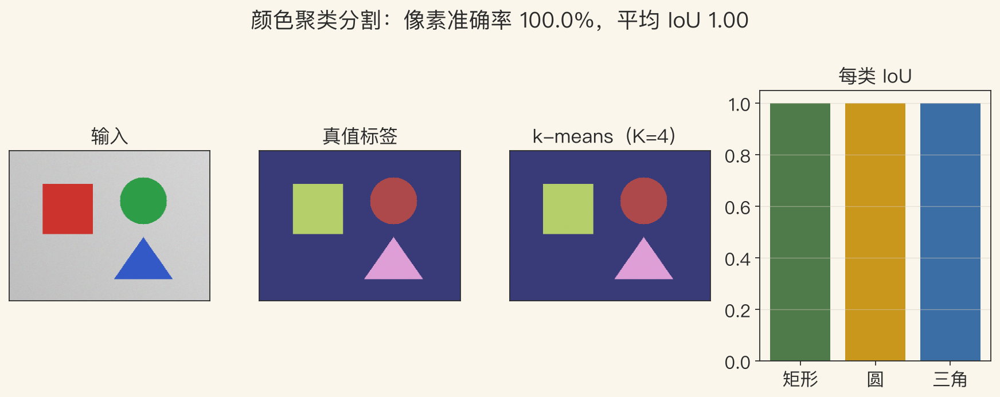

补遗课 · 第7章缺口
第7章补遗：边缘、轮廓、分割
- 第7章已讲特征点、直线和消失点。
- 边缘、轮廓跟踪、分割三节没排主线。
- 这一集把这三节一次补齐。
- 三个问题：边缘、连轮廓、分像素。
依据：原书第 455 页
基础 · 边缘与梯度
边缘：亮度或颜色快速变化
- 边缘在颜色、亮度或纹理的边界。
- 局部梯度指向亮度上升最陡方向。
- 求导放大噪声，先平滑再求梯度。
- 平滑、求梯度、找极值三步。
依据：原书第 456–457 页
尺度选择
平滑太强：弱边缘丢
平滑太弱：噪声冒出
没有一套参数通吃所有图
经典检测 · Canny
Canny：细化、双阈值、滞后
- 非极大值抑制只留梯度局部极大。
- 双阈值：高阈值起步，低阈值续接。
- 低阈值弱边多，噪声也多。
- 高阈值干净，但容易断线。
依据：原书第 457、463 页
调参顺序
先低阈值看召回
再高阈值看精度
方向差太多的点不要连
表示 · 从边缘到轮廓
轮廓：把边缘点连成链
- 孤立边缘连成连续轮廓更有用。
- 弧长参数化把轮廓写成 x(s)。
- 链码按八个方向记步数。
- 链码适合存，弧长适合匹配。
依据：原书第 461、463 页
分组依据
闭合性：看首尾距离
长度：短链先筛掉
平滑度：拐得太急不要
图1 · 边缘检测
看图：高阈值更干净，也更保守
- 360×270 合成图，三个形状颜色分明。
- 低阈值 50/150：1007 像素，F1 1.00。
- 高阈值 180/350：348 像素，F1 0.508。
- 高阈值精度 1.00，召回只有 0.340。
依据：本集实验

边缘检测：低/高阈值与 F1｜程序生成，未用教材或论文原图
活动轮廓 · snake
snake：能量最小的光滑曲线
- 能量最小化的二维样条，朝强边缘走。
- 图像能量：线项、边缘项、端点项。
- 内部保持光滑，外部贴住边缘。
- 依赖初始化，容易卡局部极小。
依据：原书第 466–468 页
两个问题
容易收缩：从外侧初始化
或者加一个向外的气球力
形状变化大：加形状先验
图2 · 轮廓提取
看图：轮廓提出来，要拿数说话
- 低阈值边缘闭合，提取 3 个外轮廓。
- 面积误差 0.012、0.007、0.017，都小于 2%。
- 圆度 4πA/P²：圆 0.893，矩形 0.787，三角 0.562。
- 轮廓越碎，面积和圆度越不稳。
依据：本集实验

轮廓提取：面积、圆度与闭合筛选｜程序生成，未用教材或论文原图
轮廓跟踪 · 水平集
水平集：让拓扑自己变
- 参数化曲线演化时很难改变拓扑。
- 水平集用零等值线表示曲线。
- 分裂和合并只是函数在变。
- 只更新零等值线附近的窄带。
依据：原书第 474、476 页
两种工具
智能剪刀：Dijkstra 找最低成本路径
rotoscoping：关键帧加传播
用户画大概，路径吸到边缘
图3 · 分割基线
看图：颜色分开，聚类几乎满分
- Lab 颜色 k-means，K 取 4。
- 像素准确率 1.0000。
- 三个类别的 IoU 都是 1.0000。
- 合成图颜色分得开，换自然图像会掉分。
依据：本集实验；原书第 483 页

颜色聚类分割：准确率与每类 IoU｜程序生成，未用教材或论文原图
图分割 · 区域合并
图分割：看相对差异，不看固定阈值
- 全局准则：区内一致，区间边界短。
- Felzenszwalb 与 Huttenlocher 用相对差异合并。
- 像素当节点，相邻差异当边权。
- 最小割容易切出孤立小区域。
依据：原书第 484–486 页
常用预处理
分水岭：按地形分水
超像素：先切小碎片
碎片上再处理，省算力
两种思路 · mean shift 与归一化割
mean shift 找峰，归一化割切弱边
- mean shift 沿密度上升，爬到峰。
- 峰就是模式，同峰归一类。
- 归一化割看跨组连接有多弱。
- 最优归一化割是 NP-complete。
依据：原书第 487–490 页
参数与代价
颜色和位置联合空间，核分别调
窗口半径 h 太大合并、太小碎
特征值松弛：慢，但弱边界敏感
收束 · 第7章闭环
一条边缘到分割的流水线
- 边缘：平滑、梯度、抑制、滞后。
- 轮廓：连链，再按面积和圆度筛选。
- 分割：图合并、mean shift、归一化割。
- 作业：换阈值，记录精度、召回、IoU。
依据：原书第 455 页；第7章闭环
三件事
边缘给候选边界
轮廓把候选串起来
分割把区域填起来